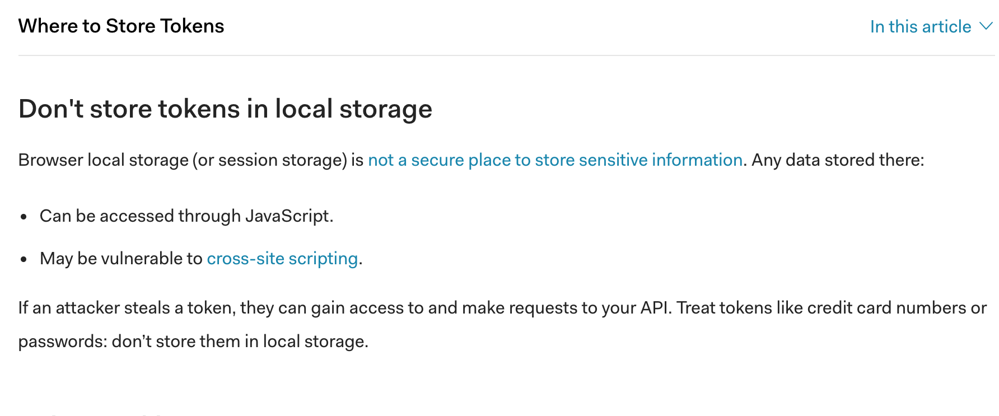

Token Up
Keeping Hands out of the Cookie Jar
Erin Browning
$whoami
@efrowning
In this talk:
- Common vulnerabilities that execute in a browser
- Typical application structures
- How to take advantage of browser-based protections
The Problem
I want to take over accounts on your website.
www.frowning.wtf

Cross site scripting
Injection!

- Steal cookies
- Change passwords
- Take actions as the user
- Change page content
Cross-Site Request Forgery More at: owasp.org/index.php/Cross-Site_Request_Forgery_(CSRF)
Cookies are sent by default with requests sent cross domain.
- frowning.wtf sends a request to transfer money to bank.example when a user visits it
- the user is logged into bank.example
- bank.example has no CSRF protection
money is transferred

Architecture
- www.domain.example - contains your frontend + any monolith code
- www.domain.example/api - api
That cookie is probably scoped to *.domain.example
If not, it'll be in local storage, placed there by your javascript
- */*
- text/plain
- application/www-url-form-encoded
- application/json
- */*, can go cross origin
- text/plain, can go cross origin
- application/www-url-form-encoded, can go cross origin
- application/json, can't go cross origin without CORS
Static pages, iFrames and websockets all have trustworthy origins in the browser
Special Thanks
Leigh Honeywell @tallpoppy